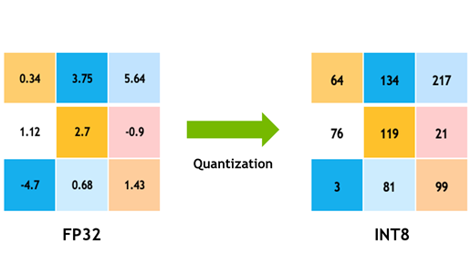
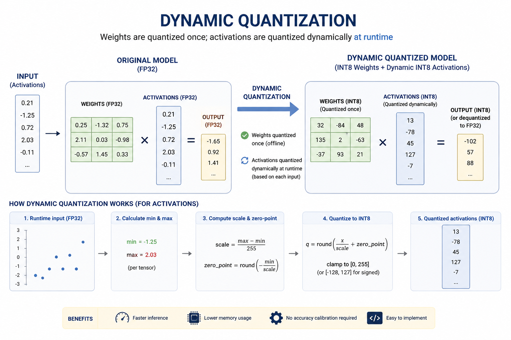
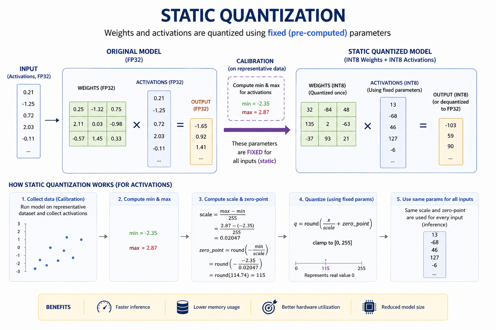
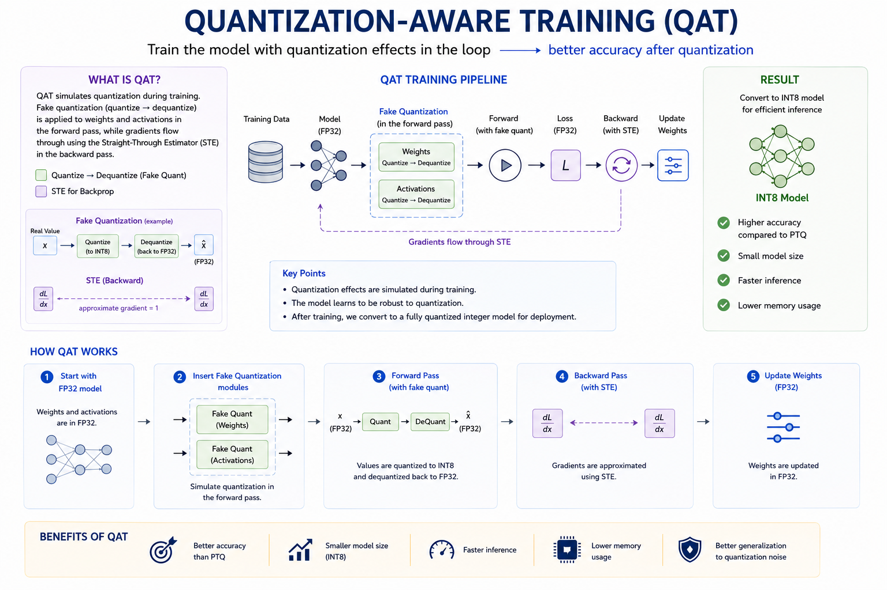

I. Định nghĩa
Quantization là phương pháp tối ưu mô hình học sâu bằng cách tính toán và lưu trữ tensor ở kiểu dữ liệu có số bit thấp hơn (ví dụ từ float32 xuống int8), qua đó giảm kích thước mô hình, tăng tốc độ suy luận và tiết kiệm bộ nhớ, trong khi vẫn giữ được độ chính xác chấp nhận được. Mô hình học sâu về bản chất là các phép toán ma trận, do đó cách biểu diễn số ảnh hưởng trực tiếp đến hiệu năng.

Việc lưu trữ số dấu phẩy động 32-bit (float32) cho độ chính xác cao nhưng tốn nhiều bộ nhớ và thời gian tính toán. Ngược lại, số nguyên 8-bit (int8) nhẹ hơn nhiều nhưng có phạm vi biểu diễn hẹp. Quantization là quá trình ánh xạ các giá trị liên tục (float) sang một tập giá trị rời rạc (int) bằng cách xác định các “ô” (bin) – những giá trị gần nhau được gom về cùng một giá trị mới.
Ví dụ: hai số 2.12234 và 2.934 ở float32 có thể cùng được ánh xạ về 23 ở int8 nếu cả hai nằm trong cùng một ô [2, 3].
II. Lợi ích của Quantization
- Giảm kích thước mô hình lên đến 4 lần (32-bit → 8-bit).
- Giảm băng thông bộ nhớ khi đọc/ghi dữ liệu.
- Tăng tốc độ suy luận từ 2 đến 4 lần (phụ thuộc phần cứng).
- Tiết kiệm năng lượng, đặc biệt trên thiết bị biên (edge devices).
III. Các phương pháp Quantization
Chúng ta cùng tìm hiểu về ba giải thuật quantization chính: Dynamic Quantization, Static Quantization (Post-Training), và Quantization-Aware Training (QAT).
1. Dynamic Quantization (Post-Training Quantization)

Trong phương pháp này, trọng số (weights) được quantize ngay từ đầu, còn các giá trị activation được quantize trong lúc inference (dynamic). Việc chuyển đổi được thực hiện bằng cách nhân giá trị đầu vào với một hệ số tỷ lệ (scaling factor), làm tròn, và lưu trữ dưới dạng số nguyên.
Ưu điểm: Đơn giản, không cần dữ liệu calibration. Nhược điểm: Hiệu quả không cao bằng static quantization. Ứng dụng: Các mô hình có thời gian tải trọng số chi phối (LSTM, Transformer) hoặc khi không muốn tinh chỉnh.
2. Static Quantization (Post-Training Quantization)

Khác với dynamic, static quantization quantize cả weights và activations trước khi inference. Quá trình gồm:
- Calibration: Chạy một vài batch dữ liệu để xác định khoảng giá trị của activations, từ đó tính scale và zero-point.
- Fuse layers: Gộp các lớp như Conv + BatchNorm + ReLU thành một khối duy nhất để tăng hiệu quả tính toán.
- Quantize và đánh giá: Có thể fine-tuning nhẹ sau quantization.
Lưu ý: Độ chính xác có thể phụ thuộc vào phần cứng (FBGEMM cho x86, QNNPACK cho ARM).
3. Quantization-Aware Training (QAT)
QAT mô phỏng ảnh hưởng của quantization ngay trong quá trình huấn luyện (fine-tuning) bằng cách chèn các lớp fake quantization vào mô hình. Các lớp này lượng tử hóa trong forward pass nhưng vẫn tính gradient ở dạng float (để cập nhật trọng số).

Quy trình QAT:
- Huấn luyện mô hình float32.
- Chèn các lớp fake quantization vào trong mạng vừa được huấn luyện xong(ví dụ
torch.quantization.QuantStub,DeQuantStub). - Thực hiện Fine-tune mô hình (vẫn dùng float cho gradient).
- Chuyển đổi sang mô hình quantize thực sự (loại bỏ fake quantization).
Hàm fake quantization thường có dạng:
QAT cho kết quả tốt nhất, đặc biệt khi mô hình nhạy cảm với quantization.
IV. Quantization trong PyTorch – Chi tiết
PyTorch cung cấp hai chế độ quantization chính:
- Eager Mode Quantization: Người dùng tự chỉ định các vị trí quantize, cần fuse layers thủ công. Chỉ hỗ trợ các module thuộc
torch.nn. - FX Graph Mode Quantization: Tự động hóa hơn, hoạt động trên đồ thị FX, hỗ trợ cả hàm và module, nhưng yêu cầu mô hình phải được viết dưới dạng
torch.nn.Modulevà có thể phải sửa nhẹ.
Dưới đây là ví dụ tối thiểu cho static quantization (eager mode):
import torch
import torch.nn as nn
import torch.quantization as quant
# Giả sử đã có model đã huấn luyện
model = MyModel()
model.eval()
# Fuse layers (ví dụ Conv + ReLU)
model.fuse_model() # tự định nghĩa hàm fuse
# Cấu hình quantization
model.qconfig = torch.quantization.get_default_qconfig('fbgemm')
torch.quantization.prepare(model, inplace=True)
# Calibration (chạy một vài batch dữ liệu)
with torch.no_grad():
for data in calibration_loader:
model(data)
# Chuyển sang mô hình quantized
torch.quantization.convert(model, inplace=True)
# Lưu model
torch.save(model.state_dict(), 'quantized_model.pth')📌 Lưu ý thực tế
- Luôn đánh giá lại độ chính xác sau khi quantize (trên tập validation).
- Với các mô hình nhạy cảm (như mô hình ngôn ngữ nhỏ), QAT thường cho kết quả khả quan hơn static quantization.
- Khi triển khai lên thiết bị di động (ARM), dùng backend QNNPACK hoặc Vulkan.
V. Kết luận
Quantization là một kỹ thuật mạnh mẽ, không thể thiếu khi triển khai mô hình học sâu lên các môi trường có tài nguyên hạn chế (điện thoại, IoT, nhúng). Tùy vào yêu cầu về độ chính xác và tốc độ, bạn có thể chọn dynamic quantization (nhanh, dễ), static quantization (cân bằng), hoặc QAT (chất lượng cao nhất). PyTorch cung cấp đầy đủ công cụ để áp dụng các phương pháp này một cách linh hoạt.